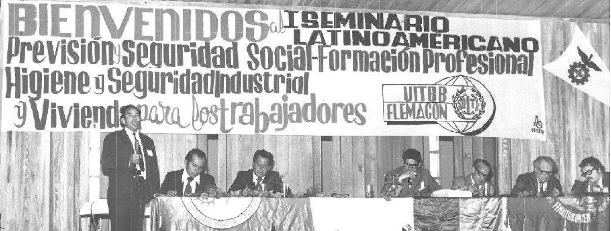
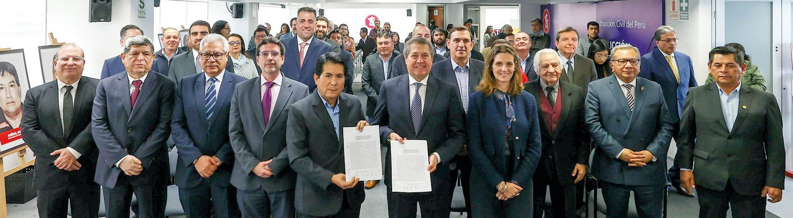

4 PARTE 1: EL VALOR DEL DIÁLOGO SOCIAL CON RESULTADOS
4.1 LEGADO Y COOPERACIÓN
La Federación de Trabajadores en Construcción Civil del Perú (FTCCP) y la Cámara Peruana de la Construcción (CAPECO) comparten un rol fundamental en el fortalecimiento de la industria de la construcción, cada una desde su ámbito de representación y acción. Ambas instituciones colaboran en mesas de diálogo y en negociaciones colectivas para establecer acuerdos que beneficien tanto a los trabajadores como a las empresas.
Coincidentemente, la FTCCP y CAPECO fueron creadas en el mismo año, 1958, lo que marcó el inicio de una relación histórica entre trabajadores y empresarios del sector construcción. La Federación, fundada el 19 de diciembre de ese año y reconocida oficialmente por el Ministerio de Trabajo y Asuntos Indígenas mediante la Resolución Subdirectoral n.º 056-SPL del 23 de agosto de 1962, representa a los obreros comprendidos en el régimen especial de construcción civil. Por su parte, el gremio empresarial, constituido el 9 de mayo de 1958, ha promovido desde sus inicios el desarrollo de una industria de la construcción responsable, orientada a fortalecer la competitividad del país y garantizar el acceso de todos los peruanos a mejores condiciones de vida a través de la construcción.
Desde la creación de ambas entidades, la defensa de los derechos laborales y la promoción de una construcción responsable han estado marcadas por diversos hitos históricos. Uno de los primeros se produjo en 1962, con la emisión de los Decretos Supremos n.º 018 y n.º 019, mediante los cuales se creó la Comisión Nacional de la Industria de la Construcción Civil, encargada de estudiar y solucionar los problemas laborales de los trabajadores del sector, así como de coordinar las comisiones regionales. Esta comisión estuvo integrada por dos delegados de CAPECO, dos de la Asociación de Ingenieros del Perú, dos de la Asociación de Propietarios, un representante del entonces Ministerio de Fomento y Obras Públicas y otro del Ministerio de Trabajo, reflejando desde entonces la aplicación del principio de tripartismo en el abordaje de los desafíos del sector, una práctica que se ha mantenido por más de sesenta años como base del diálogo social en la industria de la construcción.
 Durante el primer gobierno de Fernando Belaúnde Terry (1963-1968), se negociaba por rama de actividad en un contexto de desarrollo significativo en vivienda e infraestructura. Se destacan proyectos como la Residencial San Felipe, la Carretera Marginal de la Selva, centrales hidroeléctricas y represas, marcando un avance clave en el sector construcción.
Durante el primer gobierno de Fernando Belaúnde Terry (1963-1968), se negociaba por rama de actividad en un contexto de desarrollo significativo en vivienda e infraestructura. Se destacan proyectos como la Residencial San Felipe, la Carretera Marginal de la Selva, centrales hidroeléctricas y represas, marcando un avance clave en el sector construcción.
Fotografía: Diario El Comercio
Bajo las directivas de esa Comisión, dos años después, a través de la Resolución Ministerial n.º 480 del 20 de marzo de 1964, se solucionó el Pliego de Reclamos del 30 de diciembre de 1963. Con esa negociación, además de los incrementos salariales, se logró por primera vez la bonificación del 20% por contacto directo con aguas, el permiso sindical, la bonificación por trabajo en altura y otros beneficios que se mantienen vigentes hasta la fecha.
A partir de entonces, la negociación colectiva por rama de actividad continuó desarrollándose de manera sostenida. Durante el primer gobierno del presidente Fernando Belaúnde Terry (1963–1968), la actividad constructora alcanzó un notable auge con la puesta en marcha de un masivo plan de viviendas para atender a miles de peruanos sin casa y la ejecución de importantes obras de infraestructura vial, energética y de servicios públicos. Entre los hitos relevantes de estas políticas públicas destacan la construcción de la Residencial San Felipe -un conjunto habitacional de 33 edificios levantados sobre 27 hectáreas en el distrito limeño de Jesús María, el inicio de la Carretera Marginal de la Selva, la ampliación de la Central Hidroeléctrica del Cañón del Pato en Áncash y el comienzo de las obras de la Central del Mantaro en Huancavelica. Asimismo, se ejecutó la primera etapa del reservorio de Tinajones y se construyeron las represas de Pañe y Aguada Blanca, en Arequipa, entre otras importantes infraestructuras.
Durante el gobierno del general Juan Velasco Alvarado, iniciado el 3 de octubre de 1968, se produjo un cambio significativo en el ámbito sindical. Este contexto favoreció la reconstitución de la Confederación General de Trabajadores del Perú (CGTP), que había sido debilitada en años previos. Dentro de este proceso, la FTCCP también se benefició del ambiente político favorable al fortalecimiento de los sindicatos y aumentó su poder e influencia. Bajo el nuevo marco, la FTCCP se reorganizó y empezó a crecer en número de afiliados y en su capacidad de confrontación.
CAPECO, por su parte, consolidó su representatividad sectorial al incorporar a empresas proveedoras de materiales y servicios de construcción, y fortaleció su presencia nacional mediante la creación de filiales en varias regiones del país.
En octubre de 1970, se fundó la Federación Latinoamericana de la Edificación, Madera y Materiales de la Construcción (FLEMACON) durante el Primer Congreso Latinoamericano y Caribeño, que se llevó a cabo en la sede de la FTCCP entre el 22 y el 25 de octubre. Uno de los acuerdos centrales de este Congreso fue emprender una lucha común por mejores condiciones laborales y lograr el reconocimiento gubernamental del importante papel económico y social de los trabajadores del sector construcción. Asimismo, los delegados presentes decidieron establecer el 25 de octubre como el Día del Trabajador en Construcción Civil, encargando a cada organización sindical la realización de las acciones necesarias para oficializar esta fecha en sus respectivos países.
Para CAPECO, en cambio, la relación con el gobierno militar representó un desafío debido a su proclividad a priorizar la participación del Estado en las actividades productivas, debilitando al sector empresarial privado.
Un logro a destacar dentro del sector fue la creación del Servicio Nacional de Capacitación para la Industria de la Construcción (SENCICO), importante institución de capacitación técnica financiada con los aportes de los empresarios constructores y considerada uno de los pilares fundamentales para garantizar una construcción formal, segura, eficiente y de calidad. Este organismo, fundado en 1976, se creó gracias al esfuerzo conjunto de la FTCCP, CAPECO y el Ministerio de Vivienda y Construcción, demostrando el compromiso común por elevar los estándares de la industria. La capacitación técnica que ofrece SENCICO no solo mejora las competencias de los trabajadores, sino que también asegura que las obras cumplan con las normas técnicas y de seguridad, lo que contribuye significativamente a mejorar la competitividad de la industria de la construcción. El Consejo Directivo de la entidad reflejaba esta vocación por el tripartismo, con representación del Estado, la FTCCP y CAPECO.

En 1970 se fundó FLEMACON en un congreso que promovió mejores condiciones laborales y reconoció el papel social de los trabajadores, estableciendo el 25 de octubre como su día conmemorativo.
En 1976 se alcanza una nueva meta dentro de este proceso de diálogo mediante la fundación del Comité Nacional de Administración del Fondo para la Construcción de Viviendas y Centros Recreacionales para los Trabajadores en Construcción Civil del Perú (CONAFOVICER), después de un proceso que comenzó un año antes, en 1975, cuando la solicitud de su creación se incluyó en el pliego de reclamos sindical. Nació con el propósito de brindar beneficios importantes, como la creación de centros recreacionales, proyectos de vivienda y programas de capacitación técnica. Gracias a las negociaciones entre el Ministerio de Trabajo, CAPECO y la FTCCP, se estableció un acuerdo mediante el cual todos los trabajadores de construcción civil aportarían un porcentaje de su salario a un fondo que, a lo largo de su historia, ha permitido construir más de 30 locales, entre los que destacan centros recreacionales, núcleos deportivos y módulos de servicios múltiples. Es una organización que, además de beneficiar al trabajador, también acoge a su familia. Desde su creación, el CONAFOVICER, actualmente denominado CONA, ha sido gestionado por un directorio tripartito.
En 1979, por sugerencia de CAPECO, el gobierno militar crea el Fondo Nacional de Vivienda (FONAVI), financiado con aportes de trabajadores y empresarios, que tuvo una especial relevancia en el desarrollo de proyectos de vivienda social hasta su disolución en 1992.

En 1976 se crea el Comité Nacional de Administración del Fondo para la Construcción de Viviendas y Centros Recreacionales para los Trabajadores en Construcción Civil del Perú (CONAFOVICER), tras la negociación del pliego sindical de 1975. Su propósito fue brindar beneficios a los trabajadores, como centros recreativos, proyectos de vivienda y programas de capacitación técnica.
En el segundo gobierno de Fernando Belaúnde Terry (1980-1985) se emprendió el Plan de Viviendas en Lima y 36 ciudades. Se construyeron conjuntos habitacionales como las Torres de San Borja, Marbella, en Magdalena; Limatambo, en el distrito de San Borja; la Ciudad Satélite de Santa Rosa, Callao, por ejemplo. En cuanto a infraestructura continuó con la extensión de la Carretera Marginal de la Selva iniciada en su primer gobierno. El trabajo en construcción era creciente.
En 1982, mediante el Decreto Supremo n° 018-82 -TR, a solicitud de la FTCCP, el presidente Belaúnde estableció la jubilación a los 55 años para los trabajadores de la construcción civil. Este decreto respondía a la necesidad de proteger a los obreros expuestos a riesgos físicos constantes. El requisito exigido para acceder a este beneficio era haber aportado un mínimo de 15 años a la seguridad social o 5 años en los últimos 10 años anteriores a la contingencia.
Durante el primer gobierno de Alan García (1985-1990), se marcó otro hito importante. Fue en esta época que se logró la oficialización, mediante Ley 24324 promulgada el 4 de noviembre de 1985, del Día de los Trabajadores en Construcción Civil, una fecha que reconoció formalmente el esfuerzo y la dedicación de miles de obreros en el país. Otra conquista relevante en esta etapa para los trabajadores, fue la creación de la Bolsa de Trabajo, a través de la Ley n.° 25202 en 1990. La normativa tenía como objetivo priorizar la contratación de los obreros sindicalizados para garantizar estabilidad y beneficios sociales hasta por el 25% del total de plazas requeridas en cada obra.

Durante el segundo gobierno de Fernando Belaúnde Terry, se impulsó el Plan de Viviendas en Lima y 36 ciudades del país. Además, se avanzó con la ampliación de la Carretera Marginal de la Selva, y en 1982 se implementó la Jubilación a los 55 años para trabajadores de construcción civil mediante el Decreto Supremo n.° 018-82-TR.
Fotografía: Peruanos con Fernando Belaunde Terry
El gobierno de Alan García, después de los primeros años en los que hubo una temporal mejora en la actividad económica, entró en una crisis recesiva e inflacionaria que terminó afectando a todo el país, en particular, al sector construcción que vio mermado sus niveles de producción en inversión que provocó la quiebra de empresas y la pérdida de puestos de trabajo.
En 1990, empieza el gobierno de Alberto Fujimori, que implementa una política de shock para terminar con la hiperinflación y la recesión, pero que también implicó la reducción del aparato estatal disponiendo la adscripción del Ministerio de Vivienda al de Transportes, la disolución de la Empresa Nacional de Edificaciones - ENACE, el Banco de Vivienda, el Banco Central Hipotecario, las mutuales de crédito para vivienda y la culminación del aporte al FONAVI. El sector construcción fue seriamente impactado por estas medidas y entró en recesión.
En 1991, se soluciona en trato directo la negociación por rama de actividad correspondiente al periodo 1991-1992, que fue aprobada por Resolucion Subdirectorial - RSD 193 el 19 de junio de 1991 y suscrita entre la FTCCP, CAPECO, la Asociación de Ingenieros Constructores del Perú y el Ministerio de Transportes, Comunicaciones, Vivienda y Construcción. En esa negociación se crea la Bonificación Unificada de Construcción (BUC) que comprendió las bonificaciones por desgastes de herramienta y ropa, alimentación, compensación por falta de agua potable y por especialización de los operarios. Sin embargo, el 26 de junio de 1992, Alberto Fujimori dicta la Ley de Relaciones Colectivas de Trabajo mediante el Decreto Ley 25593, que suprimió la negociación colectiva por rama de actividad en la construcción y dispuso la negociación a nivel de empresa, lo que fue considerado un atentado en contra de los trabajadores por la FTCCP, que nunca tuvo participación en la negociación colectiva durante esos años.
En ese contexto, CAPECO decidió apartarse de esta modalidad de negociación, de conformidad con lo dispuesto por la Tercera Disposición de Transitoria de la mencionada Ley que estableció que los trabajadores y las empresas comprendidas en negociación colectiva a nivel de rama, debían ratificar dicho nivel de negociación y que, a falta de acuerdo entre las partes, la negociación en lo sucesivo se llevaría a cabo a nivel de empresa.
El 14 de agosto de 1992, mediante la Resolución Ministerial n.º 185-92-TR, y ante la falta de consenso en el seno de la Comisión Nacional de la Industria de la Construcción, la Autoridad de Trabajo resolvió el pliego correspondiente al periodo 1992-1993. Posteriormente, en diciembre de ese mismo año, se promulgó el Decreto Supremo n.º 011-92-TR, que derogó el Decreto Supremo n.º 018 y todas las disposiciones que se le opusieran, tal como lo establece su cuarta disposición transitoria y final. Con esta medida, se dejó sin efecto a la Comisión, marcando el cierre de una etapa institucional que había acompañado por más de tres décadas el desarrollo del diálogo y la negociación laboral en el sector.
En los años 1993, 1994 y 1995, CAPECO participó bajo protesta en los procesos de negociación con la FTCCP dispuestos por el Ministerio de Trabajo. En detalle, el pliego por rama de actividad correspondiente al periodo 1993-1994 se soluciona por trato directo cuyo acuerdo se puso en conocimiento del Ministerio de Trabajo y Promoción del Empleo (MTPE) el 16 de agosto de 1993. El siguiente año, en julio de 1994, mediante Resolución Directoral 155-94 se da por solucionado, en trato directo, el pliego por rama de actividad correspondiente al periodo 1994-1995. En este convenio se acuerda el incremento del 2% de los aportes al CONAFOVICER.
El 4 de junio de 1996 se dicta la Resolución Ministerial 051-96-TR que tuvo el propósito de adecuar la negociación colectiva de los trabajadores de la construcción a los alcances de la Ley de Relaciones Colectivas de Trabajo, a efecto de que se negocie por empresa. Esta situación paralizó el pliego de la FTCCP de ese año. Sin embargo, la Federación se ratifica en su decisión de no negociar por empresa y opta por hacer valer su derecho mediante acciones contencioso-administrativas, las cuales, finalmente, permitieron alcanzar sentencias de la Corte Suprema que anularon las resoluciones de la Autoridad Administrativa de Trabajo y que habían declarado improcedentes los pliegos presentados en los años previos y ordenó que se diera trámite a la negociación colectiva, lo que, como se verá más adelante, fue ratificado por una sentencia del Tribunal Constitucional.
Es así que mediante Resolución Directoral 324-95 del 26 de julio de 1994 publicada el 2 de agosto de 1995, la Autoridad Administrativa de Trabajo resuelve el pliego por rama de actividad correspondiente al periodo 1995-1996. Durante los siguientes años, la solución de pliegos fue controversial no llegando acuerdos definitivos.
En marzo del año 2003 (Exp. 0261-2003-AA/TC), la Sala Segunda del Tribunal Constitucional, integrada por los magistrados Bardelli Lartirigoyen, Rey Terry y García Toma, emite una sentencia concediéndole validez a diversas resoluciones del Ministerio de Trabajo y Promoción del Empleo que disponían la restitución de la negociación colectiva por rama de actividad en el sector construcción.
En los once años transcurridos entre ambos eventos, sucesivos pronunciamientos de la autoridad de trabajo y del Poder Judicial dieron cuenta de las posiciones divergentes que mantenían los gremios de empresarios y de trabajadores del sector respecto a la negociación colectiva por rama de actividad.
Sin embargo, el 9 de setiembre de 2004, en trato directo se da solución en forma acumulativa a los pliegos de reclamos por rama de actividad correspondiente a los años 1997, 1998, 1999, 2000 y 2004. El acta se publicó el 25 de setiembre de 2004.
4.2 LA SENTENCIA DEL TRIBUNAL CONSTITUCIONAL
En la sustentación de fondo de su sentencia, el Tribunal Constitucional hace mención -en primer lugar- al artículo 4º del Convenio n° 98 de la Organización Internacional del Trabajo - OIT, que fue aprobado por el Congreso de la República en 1963 y que establece que “[d] eberán adoptarse medidas adecuadas a las condiciones nacionales, cuando ello sea necesario, para estimular y fomentar entre empleadores y las organizaciones de empleadores, por una parte, y las organizaciones de trabajadores, por otra, el pleno desarrollo y uso de procedimientos de negociación voluntaria con objeto de reglamentar, por medio de contratos colectivos, las condiciones de empleo”.
En segundo término, el Tribunal recuerda que el artículo 28° de la Constitución Política de 1993 señala que “[e]l Estado reconoce los derechos de sindicación, negociación colectiva y huelga. Cautela su ejercicio democrático: (...) 2. Fomenta la negociación colectiva y promueve formas de solución pacífica de los conflictos laborales”, y que, por lo tanto, concluye la sentencia, “[la] Norma Fundamental encarga al Estado peruano el fomento de la negociación colectiva y la promoción de formas de solución pacífica de los conflictos, lo que significa no sólo que esta debe garantizar el derecho a la negociación colectiva, sino también que debe promover su desarrollo”.

El Tribunal Constitucional reconoció la singularidad del régimen laboral en construcción civil, caracterizado por la eventualidad y la ausencia de un lugar fijo de trabajo. Debido a la multiplicidad de empleadores y la dificultad para organizarse sindicalmente, se justificaba la intervención estatal para garantizar una negociación colectiva efectiva en el sector.
En tercer término, el TC matiza el alcance de la responsabilidad del Estado de fomentar y promover la negociación colectiva, afirmando que esta labor “implica, entre otras acciones, que el Estado promueva las condiciones necesarias para que las partes negocien libremente, ante situaciones de diferenciación admisible, el Estado debe realizar determinadas acciones positivas para asegurar las posibilidades de desarrollo y efectividad de la negociación colectiva, pudiendo otorgar determinado ‘plus de tutela’ cuando ésta sea la única vía para hacer posible la negociación colectiva”.
En cuarto lugar, y como consecuencia de esta argumentación, el Tribunal desarrolla un análisis dirigido a establecer la vinculación entre las nociones de igualdad y diferenciación. Respecto a la igualdad, señala que ésta “se configura como un derecho fundamental de la persona a no sufrir discriminación jurídica alguna; esto es, a no ser tratada de manera dispar respecto a quienes se encuentren en una misma situación, salvo que exista una justificación objetiva y razonable de esa desemejanza de trato”. Luego, afirma que el principio de igualdad no es respetado “cuando en la formulación o interpretación – aplicación de la ley, se contempla en forma distinta situaciones, hechos o acontecimientos que son idénticos. Ello con el objeto de discriminar o segmentar política, económica, social o culturalmente a algún o algunos seres humanos”. Por último, prescribe que la quiebra de la noción de igualdad “se consuma a través del establecimiento de derechos, facultades, atribuciones, deberes, responsabilidades o sanciones disímiles, a pesar de ser idénticas las conductas o situaciones de las personas involucradas en dicho proceso”.
En lo que se refiere al concepto de diferenciación, la sentencia reconoce que “el principio de igualdad no se encuentra reñido con el reconocimiento legal de la diferencia de trato, en tanto ésta estuviere fundada en una base objetiva, razonable, racional y proporcional”. A continuación, desarrolla la posibilidad de establecer un trato diferenciado en función de la naturaleza de las cosas, precisando “que en una relación jurídica pueden existir un determinado orden, peculiaridades y características singulares que en consumo dan sentido y razón de ser a ésta”. Prosigue el Tribunal, indicando que “el principio de igualdad no impide al operador del derecho determinar, entre las personas, distinciones que expresamente obedezcan a las diferencias que las mismas circunstancias prácticas establecen de manera indubitable” y que “la diferenciación debe perseguir una intencionalidad legítima, determinada, concreta y específica, cuyo fin sea la consecución o aseguramiento de un bien o valor constitucional, o de un bien o valor constitucionalmente aceptable”. Por último, el Tribunal señala que “la diferenciación será válida si demuestra ser proporcional a la situación de hecho y a la finalidad perseguida” (regla de proporcionalidad) y si se acredita”la adecuación del medio empleado por la ley con los fines perseguidos por ella. Esto implica la existencia de una conexión o vínculo eficaz entre el trato diferenciado que se legaliza, el supuesto de hecho que lo justifica y la finalidad que se pretende alcanzar” (regla de racionalidad).
En quinto lugar, la sentencia señala “que la noción de igualdad ante la ley no se riñe con la existencia de normas diferenciadoras, a condición de que se acredite: a) la existencia de una norma diferenciadora; b) la existencia de distintas situaciones de hecho y, por ende, la relevancia de la diferenciación; c) una finalidad específica; d) razonabilidad, es decir, su admisibilidad desde la perspectiva de los preceptos, valores y principios constitucionales; e) racionalidad, es decir, coherencia entre los supuestos de hecho y la finalidad que se persigue; y f) proporcionalidad; es decir, que la consecuencia jurídica diferenciadora sea armónica y correspondiente con los supuestos de hecho y la finalidad”.
En sexto lugar, los jueces constitucionales concluyen que “[l]a utilización de un valor o principio constitucional distinto al de la igualdad no es suficiente para asignarle legitimidad a un proceso diferenciador. Ello únicamente es viable cuando se logra demostrar la existencia de una razón suficiente, para sólo así otorgarle jerarquía prevalente en función a la naturaleza de las cosas…. En ese sentido, debe desvirtuarse la posibilidad de que exista otra manera o forma de alcanzar dicho fin”.
La sentencia refiere que la reiterada jurisprudencia del Tribunal “ha establecido que el derecho a la igualdad, consagrado en la Constitución, no significa que siempre y en todos los casos se debe realizar un trato uniforme. El derecho a la igualdad supone tratar ‘igual a los que son iguales’ y ‘desigual a los que son desiguales’, partiendo de la premisa de que es posible constatar que en los hechos no son pocas las ocasiones en que un determinado grupo de individuos se encuentra postergado en el acceso, en igualdad de condiciones, a las mismas oportunidades”. En estas circunstancias, corresponde determinar para el caso, si es necesario aplicar el concepto de discriminación inversa, mediante el cual se justifica “realizar un tratamiento diferenciado precisamente para promover la igualdad. Para ello se incita a que el Estado adopte una labor legislativa positiva y diligente, ya sea para corregir las disparidades en el goce de los derechos fundamentales o para alcanzar su integral realización”.
A partir de estos conceptos, el Tribunal concluye que “el régimen laboral de los trabajadores del sector de construcción civil posee características muy singulares que lo diferencian del de otros sectores, destacando: a) la eventualidad, pues la relación laboral no es permanente; dura mientras se ejecute la labor para la cual los trabajadores han sido contratados o mientras dure la ejecución de la obra; y b) la ubicación relativa, pues no existe un lugar fijo y permanente donde se realicen las labores de construcción”.
Como consecuencia de esta singularidad, se reconoce que “durante el desarrollo de su actividad laboral, el trabajador de construcción civil presta servicios para una multiplicidad de empleadores, tornando difusa la posibilidad de que pueda contar con una organización sindical a nivel de empresa, y resultando prácticamente inviable el que pueda negociar varias veces al año. Por ello, dada la situación peculiar del sector de construcción civil y con el fin de que la negociación colectiva no se torne en inoperante, es razonable y justificado que el Estado intervenga, estableciendo medidas que favorezcan una efectiva negociación”.
En concordancia con este razonamiento, el TC indica que “deberán expulsarse de nuestro ordenamiento jurídico aquellas normas que resulten incompatibles con un eficaz fomento de la negociación colectiva en el sector de construcción civil, y de ser el caso, expedirse normas que sin desconocer que el nivel de negociación debe fijarse por acuerdo mutuo, establezcan como nivel de negociación el de rama de actividad cuando no pueda arribarse a dicho acuerdo”. Concluye entonces que “el tratamiento diferenciado que el Estado realiza en este caso no constituye, per se, una afectación del derecho a la igualdad, ni a la negociación colectiva, pues se sustenta en criterios objetivos y razonables”.

Durante 22 años, la negociación colectiva entre la FTCCP y CAPECO ha sido un ejemplo de diálogo y esfuerzo conjunto. Este logro reafirma que la colaboración y el compromiso son pilares fundamentales para un Perú mejor.
A continuación, la sentencia analiza la incoherencia existente entre la Tercera disposición transitoria final y el artículo 45º de la Ley de Relaciones Colectivas de Trabajo (Decreto Legislativo nº 25593), concluyendo que se debía proceder conforme a lo señalado en este último artículo en el sentido de que “si se venía negociando a nivel de rama de actividad, de no existir acuerdo mutuo entre las partes para variar el nivel, debería mantenerse el mismo nivel de negociación”. Establece además que, si, en el caso de los trabajadores de construcción civil, se procedía conforme a lo dispuesto en tercera disposición transitoria final en el sentido que la negociación se hiciera a nivel de empresa, no se posibilitaba “la efectiva realización del derecho a la negociación colectiva de trabajadores –como por ejemplo, del sector de construcción civil– que por la peculiaridad de la labor que desarrollan, venían negociando en el nivel de rama de actividad, precisamente porque la negociación colectiva a nivel de empresa, prácticamente no se materializaba”.
Como consecuencia de la resolución del Tribunal Constitucional que puso fin a la controversia entre la FTCCP y CAPECO respecto a la validez de la negociación colectiva por rama de actividad en el sector construcción, ambos gremios iniciaron una etapa de relación basada en el diálogo abierto y constructivo. Con el tiempo, esta relación trascendió el ámbito estrictamente laboral y permitió la conformación de una agenda común orientada a la modernización de la actividad constructora. Dicha agenda incluye propuestas para enfrentar la grave disfuncionalidad urbana, el alto déficit de infraestructura, las consecuencias de la ocupación irregular del suelo y la producción informal de viviendas, así como la limitada capacidad del Estado para proveer bienes y servicios básicos de calidad y la falta de mecanismos eficientes y transparentes que faciliten la colaboración entre los sectores público y privado.
De igual modo, se ha logrado consolidar una estrategia integral para promover la formalización laboral, fortalecer la representación sindical, reducir los niveles de violencia en las obras y fomentar la mejora continua de las competencias de empresas, profesionales y trabajadores del sector construcción.
4.3 EL VALOR DEL DIÁLOGO CON RESULTADOS
La Negociación Colectiva ha sido un proceso dinámico. Desde la firma del Acta Final de Negociación Colectiva Acumulada de Construcción en Trato Directo vigente del 1º de junio del 2004 al 31 de mayo del 2005, hasta finales del 2025, todos los pliegos han sido suscritos en trato directo entre la FTCPP y CAPECO, sin participación de la autoridad del trabajo y sin un día de huelga.
En estos veintidós años, la apuesta sostenida por el diálogo ha permitido que los trabajadores del sector incrementen su capacidad adquisitiva en un 45% por encima de la inflación. Actualmente, la remuneración de un peón de construcción es 135% superior a la remuneración mínima vital y 37% mayor que el ingreso promedio nacional. Asimismo, el hecho de que no se hayan registrado paralizaciones por reclamos laborales desde 2003 ha contribuido de manera significativa a preservar la paz social en un sector históricamente afectado por las acciones delincuenciales de seudosindicatos y traficantes de tierras.
Sobre la base de este espíritu de consenso y conscientes de su responsabilidad con el desarrollo del país, ambas entidades han promovido de manera conjunta diversas iniciativas legislativas, normativas y administrativas vinculadas con la vivienda, la construcción y el desarrollo territorial. Asimismo, han buscado construir posiciones consensuadas respecto a las políticas públicas impulsadas por los diferentes niveles de gobierno en estas materias.
Desde el año 2015, la FTCCP y CAPECO han logrado articular diferentes propuestas como las del Plan Nacional de Vivienda, Desarrollo Urbano e Infraestructura 2016 - 2021; el Plan del sector construcción para los primeros cien días del gobierno nacional 2016; una propuesta para la modernización de las ciudades peruanas y la transformación del territorio nacional, que buscaba adoptar una estrategia nacional para la atención de desastres naturales, a propósito de la emergencia, presentada luego del Fenómeno de El Niño Costero en el 2017; una Estrategia Integral contra la Violencia en Obras de Construcción en el 2018.
Igualmente, ambas entidades han alcanzado posiciones conjuntas a los poderes públicos respecto a la necesidad de una Política Integral de Subsidios Habitacionales y Urbanos; del perfeccionamiento de la Ley de Regulación de Habilitaciones Urbanas y de Edificaciones; y del impulso a la construcción formal como una respuesta eficiente al tráfico de tierras. A raíz de los graves casos de corrupción que se descubrieron en el sector construcción en el 2016 y el 2018, propusieron la suscripción de un Pacto por la Ética en la Actividad Constructora, que involucrase a los sectores público y privado, y establezca principios, compromisos y acciones destinados a proveer una construcción más segura, más competitiva, más transparente y mejor orientada hacia la búsqueda del bien común. Con la llegada de la pandemia del COVID-19 en 2020, ambas instituiciones presentaron un Plan para la Reactivación del sector construcción que fue afectado por una contracción de 13.9% al cierre de dicho año.
Luego, a raíz del grave impase institucional producido durante la campaña para las elecciones presidenciales del año 2021, CAPECO y la FTCCP suscribieron una serie de pronunciamientos con la finalidad de promover el diálogo entre los poderes públicos, así como una agenda de reformas para fortalecer la institucionalidad democrática y, muy específicamente, para modernizar el sector construcción.
CAPECO y la FTCCP también han desarrollado una estrategia común de gestión en los órganos de dirección de entidades públicas como el SENCICO o el CONAFOVICER. Igualmente, han trabajado posiciones conjuntas como miembros de instancias y grupos de trabajo, como la Comisión Consultiva de Vivienda y Urbanismo del Ministerio de Vivienda, Construcción y Saneamiento; la Comisión Multisectorial de naturaleza permanente coordinación y seguimiento de las acciones de prevención y sanción de la violencia en la actividad de construcción civil del Ministerio del Interior; el Consejo Nacional del Trabajo; o el Consejo Permanente para la Vivienda, la Construcción y el Territorio en el que participaron también el Colegio de Arquitectos del Perú - CAP y el Colegio de Ingenieros del Perú - CIP.
En el año 2022 ambos gremios suscribieron el Pacto por la Construcción de un Perú Mejor. El acuerdo incluye objetivos específicos, como reducir la informalidad en la construcción civil, incrementar la capacitación técnica de los trabajadores y promover prácticas laborales responsables que respeten los derechos laborales y fortalezcan la seguridad en las obras.
En la Negociación Colectiva del año 2022-2023 se acordó constituir una nueva categoría laboral; la de los Vigías que, entre otras cosas, permitió la incorporación de un número importantes de mujeres al empleo formal en construcción. Las partes convinieron en que los trabajadores que realizan funciones de vigías serían incluidos dentro del ámbito del régimen especial de construcción civil con la categoría de Peón.
Para el siguiente año, en la Negociación Colectiva 2023-2024 se acuerda la creación del Fondo de Capacitación para los Trabajadores en Construcción Civil del Perú que se constituye como asociación de naturaleza especial con personalidad jurídica de derecho privado y que tendrá como objeto financiar la capacitación de los trabajadores de la construcción civil. Por acuerdo de las partes, que la gestión del Fondo se efecturará de manera bipartita y que las acciones de capacitación serían realizadas por CAPECO, de manera directa o indirecta. El patrimonio del Fondo será financiado por las empresas empleadoras de trabajadores en construcción civil, con un aporte obligatorio de S/ 0.20 por jornada básica diaria de cada trabajador.
Este beneficio para el trabajador se extiende en la Negociación Colectiva 2024-2025 al establecer que los hijos de trabajadores de construcción civil, a nivel nacional, también podrían ser beneficiarios de la capacitación que se ofrezca. De ser necesario y acreditada la necesidad, se podrá otorgar becas financiadas a través de dicho Fondo.
Estos ventidós años de logros a través de la negociación colectiva entre la FTCCP y CAPECO significan más de dos décadas de diálogo y esfuerzo conjunto que han transformado las condiciones de trabajo en el sector construcción, beneficiando a miles de trabajadores y sus familias, pero también han favorecido la productividad y la innovación en la industria de la construcción y posicionado a ambos gremios como un actor clave en el perfeccionamiento de políticas públicas vinculadas a la vivienda, la infraestructura y el desarrollo territorial. Esto demuestra que la colaboración y el compromiso son las bases para construir un Perú mejor para todos.
4.4 Construcción civil
Por: Antonio Zapata Velasco, Doctor en Historia por la Universidad de Columbia. Estudió Letras en la Pontificia Universidad Católica del Perú (PUCP). Es investigador asociado del Instituto de Estudios Peruanos y columnista del diario La República.
28 de setiembre del 2023
Vivimos tiempos de confrontación. El Congreso está sometiendo a los demás poderes, ya lo hizo con el Ejecutivo y ahora está tomando al Judicial, seguirá con los organismos electorales y habrá consumado la dictadura parlamentaria. Por su lado, la oposición está en movimiento, la marcha del sábado pasado representa un esfuerzo de las clases medias por retomar la acción política, que hasta ahora y en exclusividad había estado a cargo de los sectores populares. Además, las instituciones también reaccionan contra el autoritarismo y en todas se libran batallas internas. No hay duda, el Perú está viviendo un período de intensa lucha interna, como tantas veces en su historia.
Pero también se registran iniciativas en sentido contrario, malo que bueno la concertación también hace su camino. Es el caso de la Cámara Peruana de la Construcción, Capeco, y la Federación de Trabajadores en Construcción Civil, FTCC. En efecto, desde hace dos décadas, estas entidades negocian el pliego de reclamos en conversaciones formales que han fortalecido a ambas instituciones, con elevada conformidad de sus bases.
Comencemos por la línea del tiempo, los acuerdos en construcción civil empezaron durante Toledo, tuvieron un gran remezón durante el segundo García y, después de sobrepasarlo, han seguido adelante hasta hoy. De alguna manera son uno de los pocos efectos positivos de la transición que han tenido continuidad.
El tema clave de estos acuerdos es la negociación por rama. Como somos un país de miles de pequeñas empresas y solo son grandes unas pocas, la negociación por rama es la única forma de protección efectiva de los trabajadores. Una sola entidad gremial que represente a todos, porque las obras van cambiando y el personal pasa de una empresa a otra.
Así, la Federación de Construcción Civil se fortalece y gana sentido de responsabilidad. Tiene que hacer las cosas bien porque representa miles de átomos que podrían abandonarla y dejar a la institución sin piso. Solo conserva a su masa si sus acuerdos con la patronal son ventajosos para el grupo. Esa mayor responsabilidad es la clave del fortalecimiento institucional y, en efecto, hoy en día es evidente el peso de esta Federación en el debilitado mundo sindical peruano.
Pero qué gana la patronal. En primer lugar, tranquilidad social, en medio de un país tan caótico, el sector registra cero conflictos durante años. Ninguna baja que lamentar. En relación con los demás sectores productivos, queda claro que es un logro, pero también una ventaja comparativa. El aspecto laboral del negocio es estable.
Por otro lado, en época de García hubo reconocimiento de federaciones paralelas y se extendió la extorsión a los empresarios, como en tantos otros sectores y regiones del país de hoy. Pero se cortó de raíz gracias a un entendimiento con la FTCC. Para ello, Capeco aceptó que la Federación sea el canal para la contratación del personal y, a la vez, ella garantizó la calidad técnica y la idoneidad del personal. Con ello se acabaron los cupos y, por el contrario, se dio paso a cursos de formación en los que participaron ambas entidades en forma conjunta.
Otro elemento es la formalidad. Todos los años en fecha determinada, las dos partes se reúnen para discutir el salario y las condiciones de trabajo. Tienen cronograma y saben cuándo negociar o romper. No hay espacio para tácticas dilatorias.
Este caso conlleva una pregunta, por qué la negociación por rama no se ha extendido a otros sectores labora les a pesar de sus buenos resultado en construcción civil. A la vez, encierra una lección, en tiempo de intensa crisis política, las instituciones sociales suelen ser la solución. Mientras dure el desorden arriba, es mejor ordenar el país desde abajo.
4.5 Diálogos con resultados
Por: Ricardo Uceda Pérez, Periodista peruano que estudió en el Instituto Jaime Bausate y Meza. Dirigió la Unidad de Investigación del diario El Comercio y ha trabajado en otros medios de comunicación como la revista Sí. Es fundador del Instituto Prensa y Sociedad (IPYS) y autor del libro Muerte en el Pentagonito.
31 de marzo del 2024
El 19 de diciembre del 2023 hizo noticia una marcha conjunta de organizaciones sindicales y empresariales en contra de la delincuencia y en favor de la paz. Desfilaron la Asociación de Gremios Productores Agrarios del Perú (AGAP), la Cámara Peruana de la Construcción (Capeco), la Confederación General de Trabajadores del Perú (CGTP), la Confederación Nacional de Instituciones Empresariales Privadas, la Confederación Nacional de Mototaxis del Perú, la Federación de Trabajadores en Construcción Civil del Perú (FTCC), la Sociedad Nacional de Industrias (SNI) y la Asociación de Exportadores. Este largo recuento muestra que había manifestantes de distintas vertientes ideológicas para resolver un problema común.
El último 19 de marzo, el mismo grupo, con más aliados, ofreció una conferencia de prensa para dar a conocer propuestas ante la crisis de seguridad. Es posible que caigan en saco roto. Pero los dos eventos forman parte de un fenómeno singular en el escenario social, y su desarrollo podría tener un enorme impacto en la política peruana. Es oportuno explicarlo en estos días cruciales para la tambaleante presidencia de Dina Boluarte.
Hay que retroceder a 1996, cuando el gobierno de Alberto Fujimori flexibilizó la política laboral. Los trabajadores de la construcción fueron obligados a negociar sus pactos obra por obra y ya no por rama industrial, como hacían a través de la FTCC. Sobrevinieron varios años de lucha sindical, con huelgas y movilizaciones, para que el estatus anterior retornara. En el 2003, el Tribunal Constitucional determinó que la negociación debía hacerse por rama. Los dirigentes de la FTCC y Capeco, luego de siete años de pugnas, hubieron de sentarse a buscar acuerdos para resolver cuatro negociaciones colectivas acumuladas. Lo lograron salvando un sinfín de dificultades. Fue el comienzo de los “20 años de diálogo con resultados”, como ambas instituciones llaman ahora, orgullosamente, a su experiencia.
Había un interés mutuo. En un contexto de crecimiento económico, los empresarios ganaron más dinero con la paz laboral y los dirigentes sindicales lograron sustantivas mejoras salariales. El 19 de octubre del 2023, en el acto conmemorativo del primer acuerdo, Luis Villanueva, presidente de la CGTP –a la que pertenece la FTCC–, dijo que los aumentos de los trabajadores en las dos décadas superaron en 50% a la inflación acumulada. Villanueva, como líder de la federación, había sido uno de los padres del proceso. Sostuvo que dos valores fundamentales fueron la voluntad de ambas partes y la elección de posibles acuerdos factibles, cuyo cumplimiento posterior infundió confianza. Para el presidente de Capeco, Jorge Zapata, la construcción de confianza fue lo decisivo. Ambos dirigentes empezaron reflexionando sobre la falta de concierto entre los peruanos desde el surgimiento de la nación. En un momento determinado, Zapata dijo:
−No entiendo cómo empresarios y trabajadores de construcción civil tienen más puntos en común y más acuerdos que dos partidos de derecha.
Conforme pasaron los años, el rango de los acuerdos fue extendiéndose de lo salarial a los temas de seguridad en el trabajo, la educación de los hijos de los trabajadores y hasta incluyó una carta a la OIT para patrocinar mejoras en ciertas condiciones laborales. Pero después saltó a las políticas públicas. Esto coincidió con el asesoramiento a la CGTP y la SNI de Moondial FNV, la mayor confederación de los trabajadores de los Países Bajos, que apoya a sindicatos en todo el mundo para mejorar sus procesos de negociación. En Holanda hay una poderosa concertación entre empresarios y trabajadores, que se originó en los encuentros entre ellos, a veces en la prisión, durante la ocupación nazi. En 1945, dos días después de terminada la Segunda Guerra Mundial, con el país en escombros, ambos sectores crearon la Fundación del Trabajo, para construir acuerdos permanentes. Mientras Holanda se convertía en una de las 10 economías más competitivas del mundo, su modelo de diálogo social empezó a difundirse. Extrañamente, uno de los países donde prendió fue el Perú.
Uno de los asesores de Moondial FNV, Samuel Machacuay, empezó a conversar sostenidamente con los dirigentes de la CGTP, quienes ya estaban convencidos que solo con paros y huelgas no podrían obtener resultados. Pero no se relacionaban con los empresarios. Machacuay decía que lo primero y más importante era crear confianza entre las personas. En un período que transcurrió entre el 2008 y el 2014 diversos dirigentes dialogaron en privado antes de obtener el primer resultado. Hay que mencionar, de la CGTP, a Mario Huamán (ya fallecido), Juan José Gorriti, Carmela Sifuentes y Luis Villanueva. De la SIN, a David Lemor, Luis Salazar, Roberto Nesta y José Naranjo. Luego de esos años, entre ellos logró construirse una relación de confianza para dialogar. El primer resultado se produjo cuando la CGTP obtuvo que los empresarios participaran en una marcha por la paz, en un período en que había numerosos dirigentes de construcción civil asesinados por la delincuencia. A su vez, la CGTP participó en una conferencia sobre diversificación productiva que la SIN organizó a propósito de su aniversario.
El siguiente hito fue una invitación de seis días a Holanda que hizo el FNV a una delegación de los máximos dirigentes de la SNI y la CGTP, AGAP y Capeco. Durante intensas jornadas conocieron los detalles del diálogo social y sus resultados en los Países Bajos. Además, conversaron más entre ellos. Los dirigentes de la SIN y la CGTP regresaron resueltos a fundar la Asociación por el Trabajo, para promover mediante el diálogo el desarrollo social y económico del país, entre otros objetivos complementarios. Las reuniones para hacer el estatuto se hicieron en la casa del embajador holandés. Establecía que ambas organizaciones tendrían igual representatividad, con solo un voto por cada lado, al margen del número de sus delegados. Como chocaron con las normas registrales, que impedían a una asociación (SNI) y a una central sindical (CGTP) fundar otra asociación, decidieron funcionar, de hecho, en silencio, produciendo propuestas de reformas sobre capacitación, seguridad y salud laboral, que aún no han sido adoptadas por el Estado. Suscribieron, además, un pacto social por el trabajo decente a través de la industrialización.
Llegó otra invitación para visitar Holanda, esta vez por tres semanas, que igualmente aceptaron los principales dirigentes. Examinaron todo el sistema, hasta el presupuesto para una actividad denominada “conversaciones de cocina”. Alguien preguntó por qué era tan alto. Le contestaron que cuando se iba a proponer un tema difícil, el dirigente interesado invitaba al líder de la contraparte a su casa. Cocinaban juntos mientras aproximaban posiciones. En el Perú no se ha llegado a tanto, pero la Asociación por el Trabajo ha pasado a considerar la preparación de propuestas de ciertas reformas fundamentales –una de ellas, precisamente la de inseguridad ciudadana– con su método de consensuar el objetivo deseado y luego buscar a los expertos idóneos para formularlas. La fuerza de una propuesta con este origen, más que su componente tecnocrático, es que los autores son miembros de distintas vertientes ideológicas. Mediante un trabajo político pueden hacer triunfar su consenso. Algo de verdad tiene el dicho humorístico de que la izquierda y la derecha unidas jamás serán vencidas.
Ante la crisis institucional, el desarrollo de este proceso es providencial. Por un lado, hay una inoperancia de organizaciones del Estado que deben producir diálogos para resolver grandes problemas: la Comisión de Alto Nivel Anticorrupción, el Consejo Nacional de Seguridad Ciudadana, el Consejo Nacional del Trabajo y Promoción del Empleo, el Acuerdo Nacional. Por otro lado, otros intentos acuerdistas en la sociedad civil son aún incipientes. Ante la urgencia, sería atinado pedirle a la Asociación por el Trabajo que ocupe el espacio vacío y ejerza un mayor liderazgo.